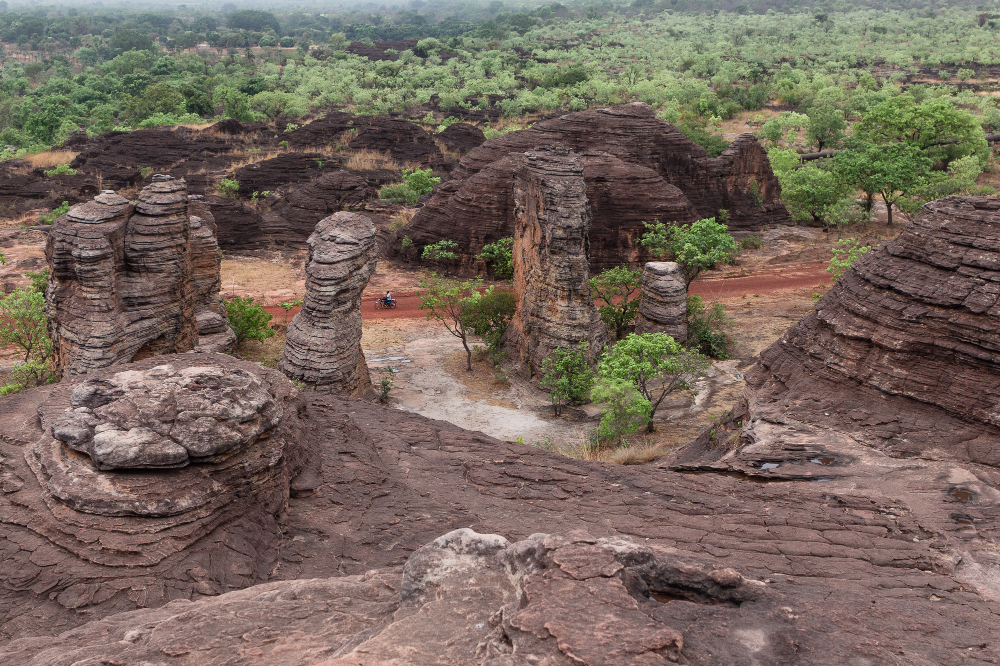
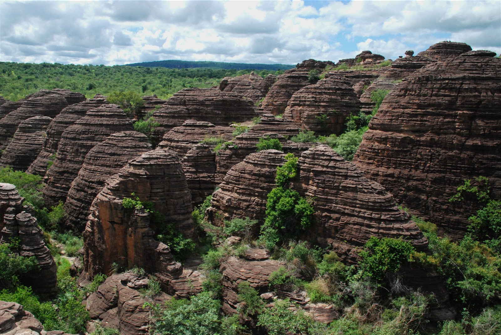

Situées à proximité de la ville de Banfora, dans la région des Cascades au sud-ouest du Burkina Faso, les Falaises de Banfora sont des formations rocheuses imposantes qui offrent un spectacle naturel saisissant. Ces falaises de grès rouge se dressent fièrement au milieu d'une végétation luxuriante, dominant la vallée environnante. Le site est apprécié pour ses paysages grandioses, ses sentiers de randonnée et ses panoramas à couper le souffle.
Description du site
Les Falaises de Banfora sont constituées de couches de grès érodées par le vent et l'eau, ce qui leur confère des formes uniques et des couleurs chaudes variant du rouge au brun. Leur hauteur atteint plusieurs dizaines de mètres, offrant aux visiteurs la possibilité de faire des balades ou des escalades pour admirer la vallée de la Comoé et la forêt environnante. Le site est un lieu privilégié pour les amoureux de la nature, les randonneurs et les photographes.
On peut également y observer une biodiversité riche, avec diverses espèces végétales et animales endémiques de la région. L'accès au site est gratuit, mais il est conseillé d'être accompagné d'un guide local pour découvrir pleinement les trésors cachés du site.

Historique
Les Falaises de Banfora se sont formées il y a des millions d'années, à la suite de phénomènes géologiques impliquant la sédimentation et l'érosion. Elles font partie d'un ensemble géologique qui a contribué à façonner le paysage caractéristique de la région des Cascades. Depuis longtemps, ces falaises sont un repère important pour les populations locales, qui les considèrent comme un lieu chargé de symboles et de traditions.
Elles ont servi de refuge, de point de repère, et continuent d'être un lieu de rassemblement lors de certaines cérémonies culturelles. Aujourd'hui, elles attirent de nombreux visiteurs, nationaux et étrangers, désireux de découvrir les richesses naturelles et culturelles du Burkina Faso.
